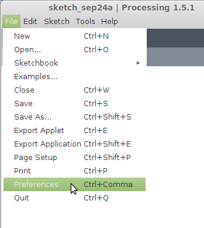
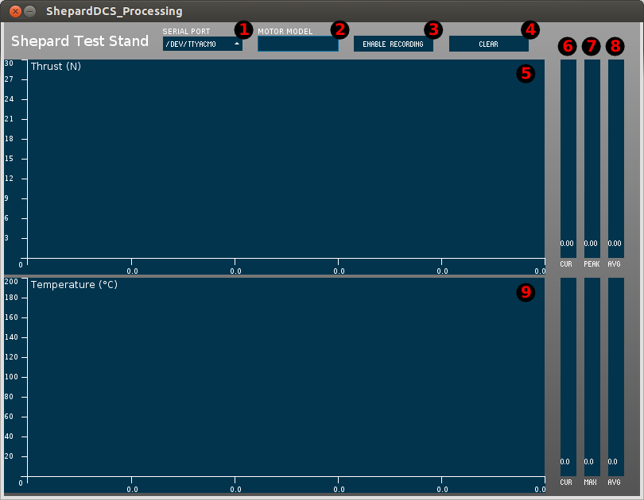

Operating Manual v1.0¶
This document has been relinked to the Operating Manual document here as part of our versioning system update.
Hardware Operation¶
Unpacking After Transport¶
- Check shipping container(s) for:
- Test stand
- Concrete block
- Box of accessories
- Launch controller
- D motor spacer ring
- Motor mount adapters (A, B, and C to D/E size)
- Thermocouple attachment tape (high temp)
- Computer and USB cable
- Motors to test (with igniters and igniter plugs)
- Fire extinguisher and maybe a bucket for water
Test Stand Setup¶
- Place concrete block in location where test stand will be operated
- Set test stand on concrete block
- Create the safety perimeter.
- Delineate no stand zone for both proximity and positions
- Use length of cord for the igniter (radius of operations)
- Exclusion zones exist behind where exhaust escapes (30 degree cone), and in front on each side of the exhaust T (30 degree cone on each side)
- Delineate no stand zone for both proximity and positions
- Set up the management area for test.
- Igniter
- Clip the igniter to a part of the test stand and deploy the cable to its full length and place it where the test(s) will be run from
- Computer
- Set up computer
- Boot computer
- Run USB cable from computer to test stand
- Connect Arduino-based DAQ system to USB cable at test stand
- Start the Test Stand App
- Ensure DAQ system and Computer are both running and connected
- Igniter
Prepare For Test*¶
- Check the following areas of the test stand for fatigue damage and good fit.
- Motor mount
- Zip ties holding motor mount
- Linear guide rail system
- Clear any debris from linear guide rail system and ejection charge exhaust ports
- Test sensors
- Push on thrust sensor and confirm current value slider responds
- Put fingers around thermocouple(s) (after ensuring it is not hot) and confirm plot responds
- Install motor in test stand
- A-C Motors
- Attach thermocouple(s)
- Insert igniter into motor and cap with igniter plug, making sure to space leads
- Install the motor in an adapter
- Insert D spacer ring into the motor mount
- Insert the motor assembly into the motor mount so a notch from the adapter lines up with the clip on the motor mount so it clicks into place
- D Motors
- Attach thermocouple(s)
- Insert igniter into motor and cap with igniter plug, making sure to space leads
- Insert D spacer ring into the motor mount
- Insert the motor into the motor mount, pushing it all the way into the the motor mount, note the clip should close
- E Motors
- Attach thermocouple(s)
- Insert igniter into motor and cap with igniter plug, making sure to space leads
- Insert the motor into the motor mount, pushing it all the way into the the motor mount, note the clip should close
- A-C Motors
- Double check that the range is actually clear
- Set up igniter
- Make sure the firing pin is not in place
- Connect alligator clips from Launch Controller to the igniter (one to each lead)
- At this point the range is hot (ready to fire)
Perform Test (Fire Motor and Take Data)*¶
- Hit button to Enable Recording
- Insert firing pin into Launch Controller
- Check for continuity by pressing on firing pin (light will turn on)
- Count down
- Press ignition button (may have to hold it down for a second)
- At the end of the firing, remove the firing pin from the Launch Controller
Post Test Duties*¶
- Remove motor and prepare for disposal
- Wait several minutes before removing the motor to allow it to cool down to a safe handling temperature
- Remember to also remove the D space ring if the motor was D size or smaller
- Remember to find the igniter (it should still be attached to the alligator clips) so it can be properly disposed
- For C size motors and smaller, be sure to recover the motor adapter
- Store spent motors away from flammable material during future tests
- Check to make sure that data was autosaved to the "data" directory.
- Click the Clear button on the software once you have finished viewing the data.
Post Operations Duties (After Firing All Motors)¶
- Dispose of motor(s), being careful to observe all state, federal, and local guidelines.
- Rinse motors in water to ensure they are completely cooled before disposal
- Throw the motors away according the manufacturer’s recommendation
- Pack up the accessories
- Pack up the computer
- Pack up the test stand and block
Note: If performing multiple tests during the same setup, repeat the steps with an asterisk (*) for each test.
Software Operation¶
For instructions on how to download and install the Shepard data acquisition (DAQ) software, please see the Software Source Code section of the wiki.
Wiring (Arduino) Software¶
Inside the ShepardDCS_Arduino directory within the repository (/trunk/ShepardDCS/ShepardDCS_Arduino), you will find the ShepardDCS_Arduino.ino file. Before this file can be opened and run using the Arduino IDE, there is a third-party library from Adafruit that must be installed for the MAX31855 thermocouple amplifier breakout board. The library should already be included in the trunk/libraries directory, but if it's not, the library can be downloaded from Github here , and instructions to install the library are included under the "Arduino Library" section here . To make sure that the library gets inluded, set the shepard-ts/trunk directory to be the Sketchbook location under File -> Preferences in the Arduino IDE.
Processing (Desktop) Software¶
When you've downloaded the source code via subversion, you descend through the directory tree until you end up in the ShepardDCS directory (see Listing 1). Inside this directory you will find a directory holding the Arduino code, and one holding the Processing (PC-side) code. There is a file named ShepardDCS_Arduino.ino inside the ShepardDCS_Arduino directory. You open this file with the Arduino IDE and compile/upload it to the Arduino Uno. The ShepardDCS_Processing directory includes the ShepardDCS_Processing.pde file, which you open and run with the Processing IDE on your PC to display the data dashboard for Shepard.
Listing 1
├── branches
├── tags
└── trunk
├── libraries
│ └── controlP5
└── ShepardDCS
├── ShepardDCS_Arduino
└── ShepardDCS_Processing
You'll notice that there is a libraries directory at the same level as the ShepardDCS directory. libraries contains the ControlP5 library which provides the graphical elements for the ShepardDCS user interface. In order for this library to be found, you will either need to move the libraries directory into the already configured Processing sketchbook directory, or you'll have to reconfigure the sketchbook directory to point to the trunk directory. This option is found under File -> Preferences in the Processing IDE (Figure 1 and Figure 2).
Figure 1

Figure 2
Once you're connected the PC to the Arduino Uno with a USB cable, open and run the ShepardDCS_Arduino.ino file from the Arduino IDE first. This will load and start the program on the Uno. When the Arduino program is running and ready to transmit data, the TX LED for the serial port will be lighted continuously.
Start the Processing application and the TX LED on the Arduino Uno should start to flash. If you have the sensors attached, you should be able to apply pressure to the thrust sensor to change the "CUR" (current thrust value) slide on the user interface as a simple test. To check temperature monitoring, you can hold the thermocouple between your thumb and index finger to see if the "CUR" value for the temperature rises.
There are several components of the user interface, and those are numbered for reference in Figure 3.
Figure 3

- The SERIAL PORT dropdown box allows you to set the serial port that the Arduino is attached to. This dropdown box will be populated with the serial ports (including the Arduino) that are attached to your system. For Windows it will be a serial port designation such as "COM5", and for Linux it will be something like
/dev/ttyACM0. Linux users may have to add themselves to a group that has access to serial ports such asdialout. - The text that you enter in the MOTOR MODEL field will be prepended to the output file name. The rest of the file name will consist of a time stamp. For instance, if you enter "B1-6" in the MOTOR MODEL text field and then record data at 8:42:38 AM, you will end up with a file name of B1-6_8_42_32.csv. If you leave this field blank the file name will start with an underscore followed by the time stamp (_8_42_32.csv).
- The ENABLE RECORDING button allows you to control whether or not the application keeps track of the thrust and temperature on the chart, and the max/peak and average sliders. This button also controls whether or not the data is written to a CSV file. When this button is enabled (clicked so that it becomes highlighted) and the thrust value goes above a value of 0.0, data will be collected. Once the ENABLE RECORDING button is disabled (clicked so that it is no longer highlighted) and the thrust value has been above 0.0, the data will be written to a file.
- The CLEAR button clears the charts, averages, and maxes to prepare for the next run. Do not click this until you are finished looking at the data from the previous test.
- The Thrust chart has Newtons (N) on the Y-axis, and time on the X-axis. The X-axis will auto scale as the time (seconds) increases, and new values feed from the right side to the left side of the chart.
- The CUR (current value) sliders provide a graphical and numeric representation of either the thrust (top slider), or the temperature (bottom slider). The slider will fill from the bottom to the top as the value increases.
- The PEAK or MAX value sliders show the same thing, but different terminology is used for the thrust (PEAK) than for the temperature (MAX). Both of these sliders show the highest value that is reached during a test run. This is either the peak thrust of the motor, or the highest temperature that was seen on the motor casing.
- The AVG (average) sliders keep track of a running average of the values reported by the thrust and temperature sensors. This average is influenced by how long you leave the ENABLE RECORDING button enabled (clicked so that it is highlighted), so it's best to stop the recording soon after the motor has exhausted its fuel and ejected the parachute charge.
- The Temperature chart works in the same way as the Thrust chart above. The Y-axis is in degrees Celsius (C), and the X-axis is again in seconds. The X-axis auto-scales as time increases, and new values feed from the right side of the chart to the left.
For a normal test run, you would follow all of the steps shown in "Hardware Operation" above. Two software related items that are called out is clicking the Enable Recording button and clicking the Clear button. If the Enable Recording button is not clicked when you preform a test run, you will only see the current value slider change, and no data will be recorded. On the other hand, you do not want the Enable Recording button to be clicked/enabled when you're testing sensors or you may end up with a false trigger and useless data. Keep the Enable Recording button toggled to disabled until you're ready to perform a test fire. Failure to click the Clear button before doing another test run will cause the new data to be combined with the old data, causing tandem curves on the charts, and incorrect averages and maxes.
The test stand's data is stored in CSV (comma delimited) format, so you can copy the files to any computer to perform an analysis. Applications like Microsoft Office and Libre Office will allow you to create line charts and do much more with the data.
Integrated Operation¶
Once the third-party library is installed, you should be able to compile and upload the Arduino program. You can then close the Arduino IDE, restart the Arduino Uno, and launch the Processing app to start collecting the data.
{kind=link}
{kind=link}
{kind=link}